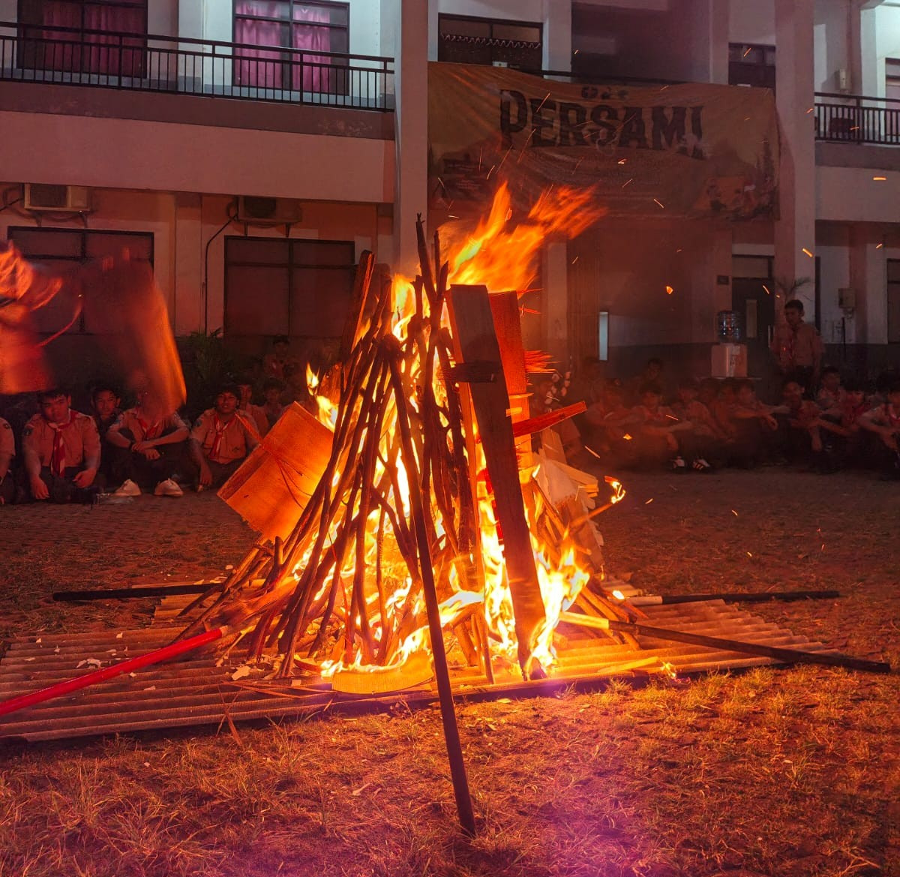
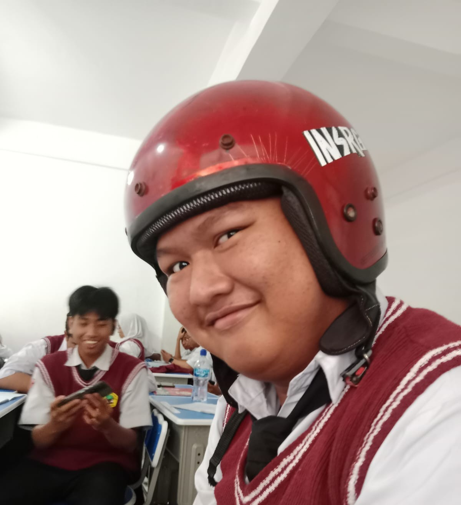
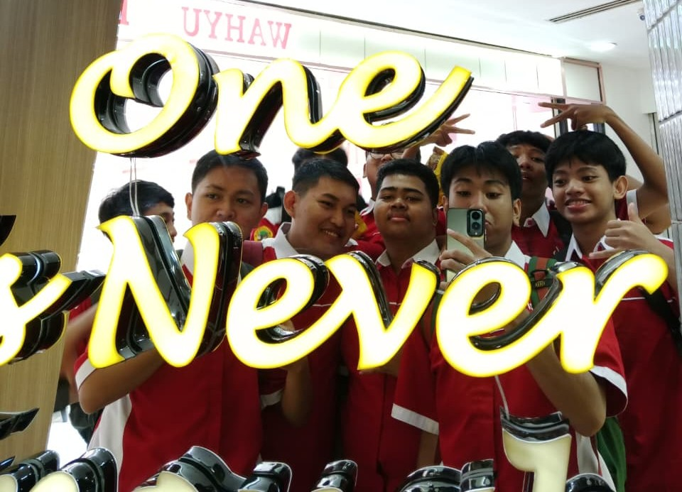
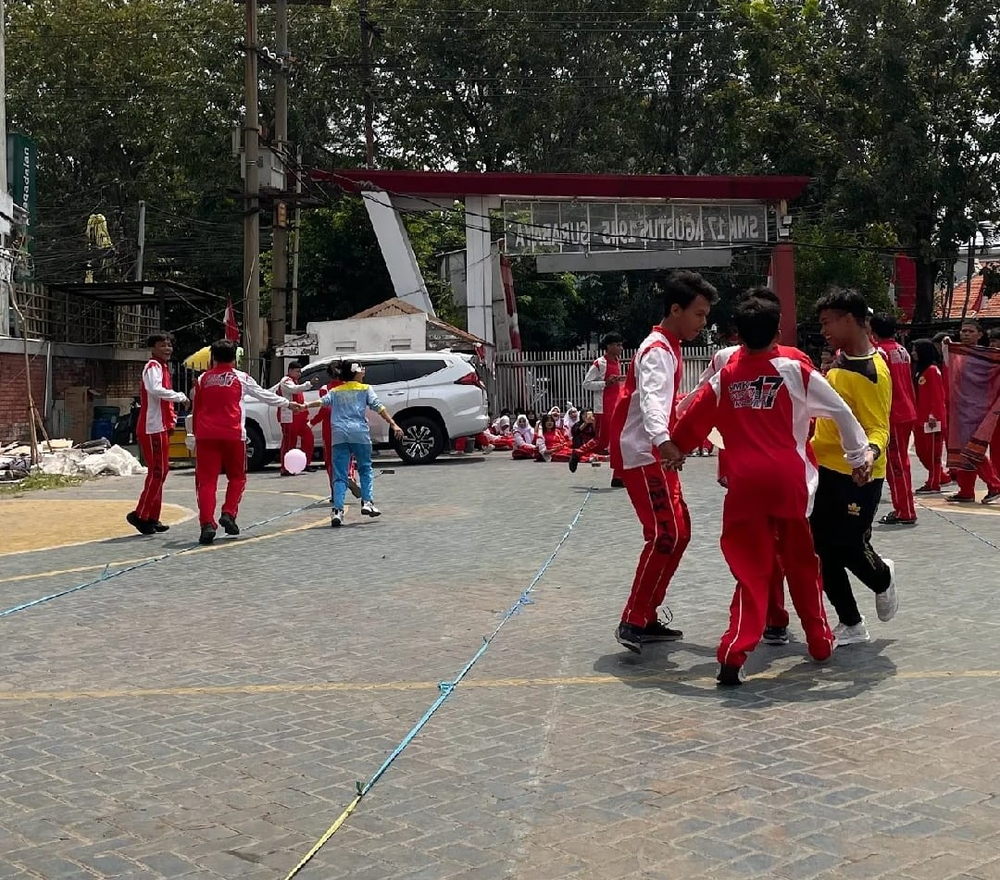
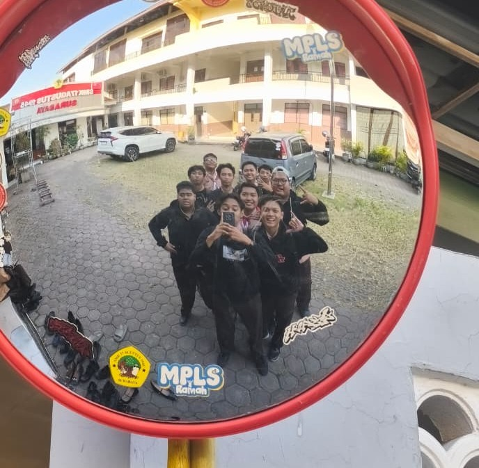
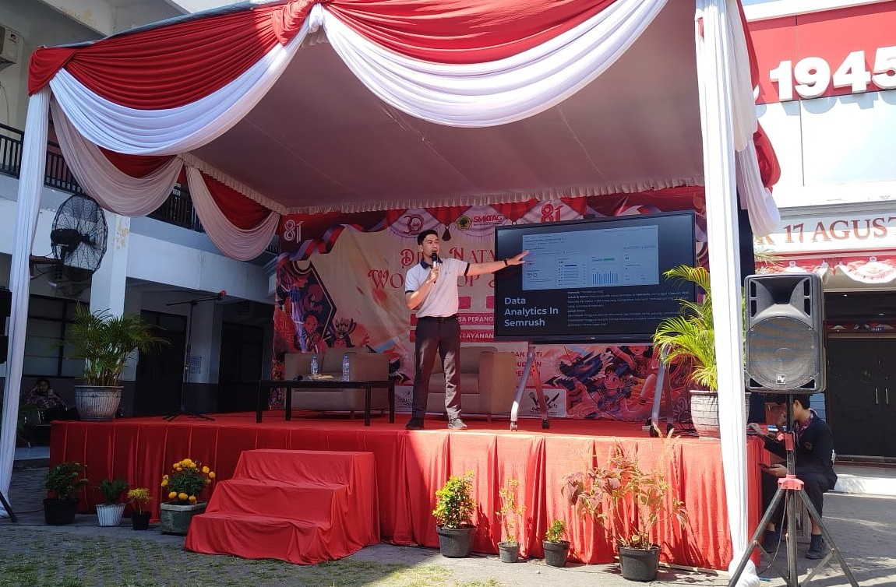
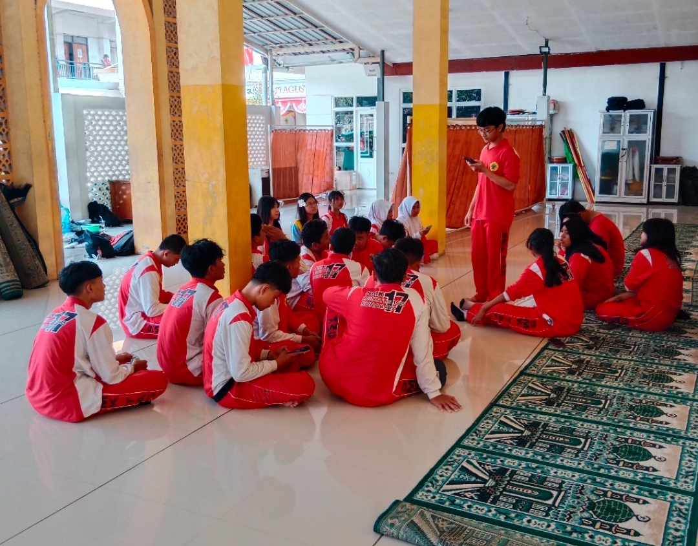
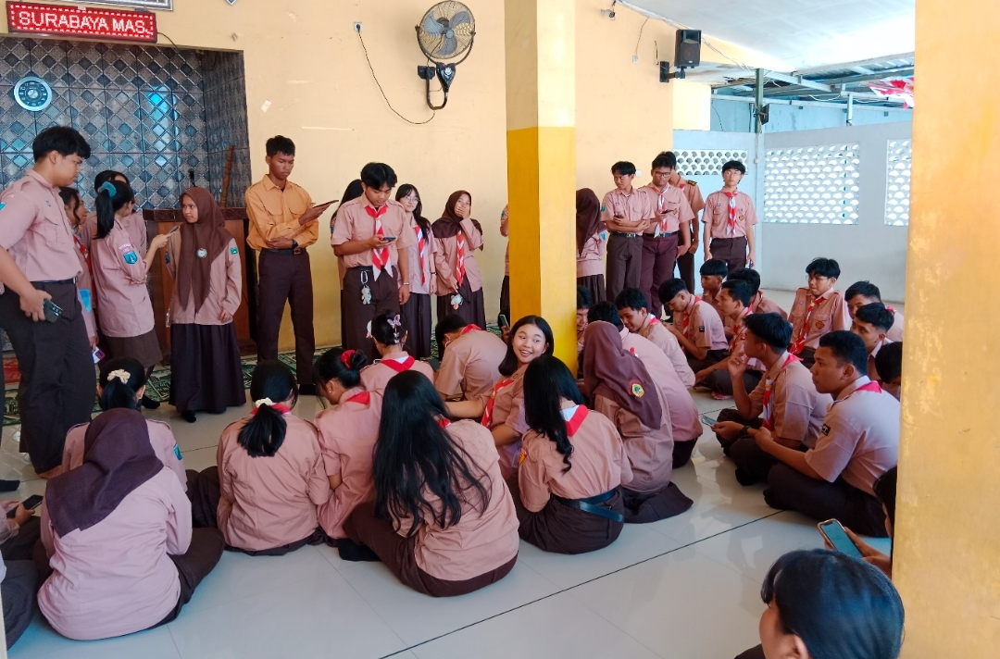
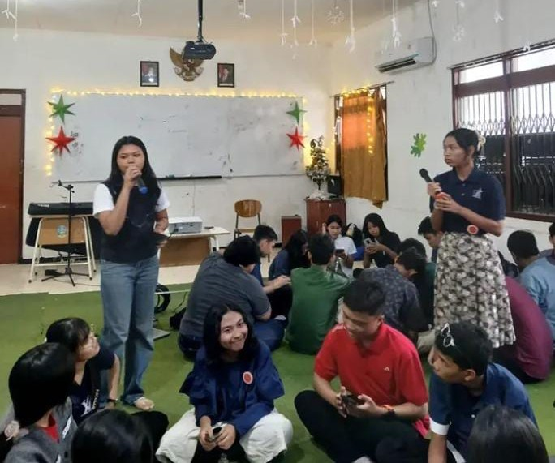

28 Mei 2026

Perkemahan Sabtu Minggu di Lapangan SMKTAG
Melakukan Kegiatan Perkemahan di Lapangan SMKTAG yang menambahkan wawasan terhadap pramuka
Baca selengkapnyaMencetak generasi vokasi yang kompeten, berkarakter, dan siap bersaing di dunia industri dengan semangat kemandirian dan nasionalisme.

Assalamualaikum Warahmatullah Wabarakatuh Om Swastiastu Shalom Namo Buddhaya Salam Kebajikan Salam sejahtera bagi kita semua.
Puji Syukur Alhamdulillah kami panjatkan atas kehadirat Tuhan Yang Maha Esa karena atas limpahan berkat dan karunia-Nya sehingga sekolah kami mendapatkan kesempatan untuk memiliki website dengan alamat smktag.sch.id . Mudah-mudahan dengan adanya website ini dapat membantu seluruh pengunjung website ini untuk menemukan informasi yang detail.
Ida Ayu Laksmi Dewi,S.Hub,Int
Kepala SMK 17 Agustus 1945 Surabaya
Sejarah panjang dan arah tujuan yang menjadi fondasi setiap langkah kami dalam mendidik generasi vokasi.
SMK 17 Agustus 1945 Surabaya didirikan dengan semangat kemerdekaan sebagai landasan nama dan nilai kelembagaan. Sejak awal berdirinya, sekolah ini berkomitmen menghadirkan pendidikan kejuruan yang relevan dengan kebutuhan dunia usaha dan dunia industri, sekaligus menjaga nilai-nilai kebangsaan dalam setiap proses pembelajarannya.
Hingga kini, sekolah terus bertransformasi mengikuti perkembangan teknologi tanpa meninggalkan jati diri sebagai lembaga pendidikan yang berkarakter dan berdedikasi terhadap mutu lulusan.
Menjadikan lulusan SMK 17 Agustus 1945 Surabaya bertaraf global yang unggul, kompetitif dan berakhlakul karimah.
Didukung fasilitas belajar dan praktik yang memadai untuk menunjang proses pembelajaran teori maupun keterampilan setiap kompetensi keahlian.
Empat kompetensi keahlian yang dirancang selaras dengan kebutuhan dunia kerja masa kini.
Membekali siswa dengan kemampuan pemrograman, pengembangan aplikasi, website, dan pengelolaan basis data.
Mengembangkan keterampilan dalam pengolahan makanan, penyajian hidangan, tata boga, dan pengelolaan usaha kuliner.
Membekali siswa dengan keterampilan pelayanan tamu, tata graha, pengelolaan hotel, dan layanan perhotelan.
Membekali siswa dengan keterampilan pelayanan wisata, perencanaan perjalanan, pemanduan, dan pengelolaan kegiatan pariwisata.
Momen-momen kegiatan belajar, praktik, dan upacara kebangsaan di lingkungan sekolah.











Melakukan Kegiatan Perkemahan di Lapangan SMKTAG yang menambahkan wawasan terhadap pramuka
Baca selengkapnya
Melakukan kegiatan ekstrakurikuler yang menambahkan semangat mendukung SMK 17 Agustus 1945 Surabaya.
Baca selengkapnya
Melakukan kegiatan rohani yang meningkatkan iman dan taqwa para siswa.
Baca selengkapnya
Melakukan perayaan Maulid Nabi Muhammad SAW yang meningkatkan semangat keimanan dan ketaatan para siswa.
Baca selengkapnyaWujudkan masa depan yang kompeten dan berkarakter bersama SMK 17 Agustus 1945 Surabaya. Pendaftaran tahun ajaran 2026/2027 telah dibuka.
Isi formulir pendaftaran daring melalui tombol di bawah ini.
Unggah berkas persyaratan: ijazah/SKL, KK, dan pas foto terbaru.
Ikuti tes seleksi dan wawancara sesuai jadwal yang ditentukan.
Pantau hasil pengumuman kelulusan melalui website resmi sekolah.
Kunjungi atau hubungi kami untuk informasi lebih lanjut mengenai sekolah dan pendaftaran.
Jl. Nginden Semolo No. 44, Surabaya, Jawa Timur, Indonesia
031-5925238
info@smk17agustus45sby.sch.id
Senin – Kamis, 06.45 – 15.15 WIB
Jumat, 06.45 – 15.00 WIB
Informasi berita.